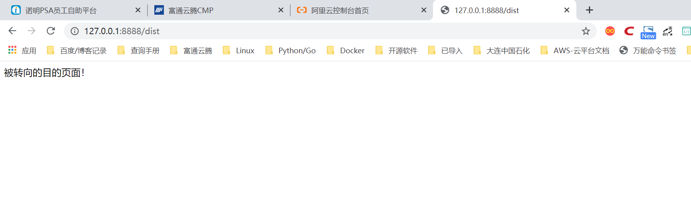

Contents
22.5.5. URL转向与静态文件资源¶
在Tornado框架的Web编程中，也可以实现与Flask中相同的URL转向的功能。Tornado框架中有两种方法可以实现URL转向：
- redirect（url） 在业务逻辑中转向URL；
- RedirectHandler 实现某个URL的直接转向。
RedirectHandler类的具体使用形式为：
(r'/aaa', tornado.Web.RedirectHandler,dict(url='/abc'))
URL转向¶
代码演示¶
演示了两种URL转向的实例，代码如下：
#!/usr/bin/env python
# -*- coding:utf8 -*-
# auther; 18793
# Date：2020/5/6 16:41
# filename: sample01.py
"""
在Tornado框架的Web编程中，也可以实现与Flask中相同的URL转向的功能。Tornado框架中有两种方法可以实现URL转向：
* redirect（url） 在业务逻辑中转向URL；
* RedirectHandler 实现某个URL的直接转向。
RedirectHandler类的具体使用形式为：
(r'/aaa', tornado.Web.RedirectHandler,dict(url='/abc'))
"""
import tornado.ioloop
import tornado.web
class DistHdl(tornado.web.RequestHandler):
def get(self):
self.write("被转向的目的页面！")
class SrcHdl(tornado.web.RequestHandler):
def get(self):
self.redirect('/dist') #在业务逻辑中转向
app = tornado.web.Application([
(r'/dist', DistHdl),
(r'/src', SrcHdl),
(r'/rdrt', tornado.web.RedirectHandler, {'url': '/src'}) # 直接转向
])
if __name__ == '__main__':
app.listen(8888)
tornado.ioloop.IOLoop.instance().start()
'''
代码中定义了两个类，DistHdl作为转向的目标URL请求处理器，SrcHdl是转向处理器，
当访问指向这个业务类时，会被转向到‘/dist’网址。
最后，在Application类中定义一个直接转向，只要访问‘/rdrt’就会直接转向到‘/src’。
所以，有趣的是，如果你试图访问'/rdrt'URL，会转向'/src'，再最终转向'/dist'。
'''
运行的结果无论是你访问‘/rdrt’，还是访问‘/src’，最后都会如图
转向的目的页面

使用静态资源文件¶
Tornado框架也支持在网站的页面中直接使用静态的资源文件，如图片、JS脚本、CSS样式表等。如果需要使用静态文件资源时，需要在Application类初始化时提供“static_path”参数。
代码演示¶
同级目录下存放static/torn.jpg文件。
演示了在网站页面中引用图片的实例，代码如下：
#!/usr/bin/env python
# -*- coding:utf8 -*-
# auther; 18793
# Date：2020/5/6 16:45
# filename: sample01.py
"""
Tornado框架也支持在网站的页面中直接使用静态的资源文件，如图片、JS脚本、CSS样式表等。
如果需要使用静态文件资源时，需要在Application类初始化时提供“static_path”参数。
"""
import tornado.ioloop
import tornado.web
class SttHdl(tornado.web.RequestHandler):
def get(self):
self.write("<img src='/static/torn.jpg' />") #使用了本网站图片
app = tornado.web.Application([
(r'/stt', SttHdl),
], static_path='./static') #提供了static_path参数
if __name__ == '__main__':
app.listen(8888)
tornado.ioloop.IOLoop.instance().start()
【代码说明】 代码中‘/stt’请求返回的HTML代码中是一个img标签，引用本网站中的一幅图片。在初始化Application类时，提供了static_path参数，以指明静态资源的目录。
注意¶
此处的静态资源目录是相对于运行时所在的路径目录，所以运行服务器命令行时应进入对应的目录，否则无法找到静态资源。你可以使用绝对路径来排除此问题。
【运行效果】 如下图所示，页面中显示了一幅图片：